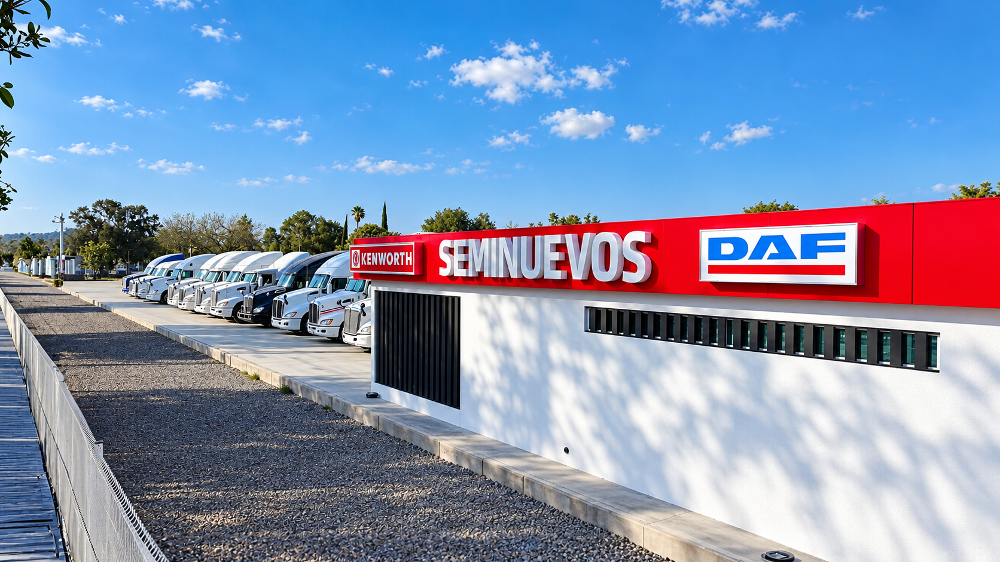
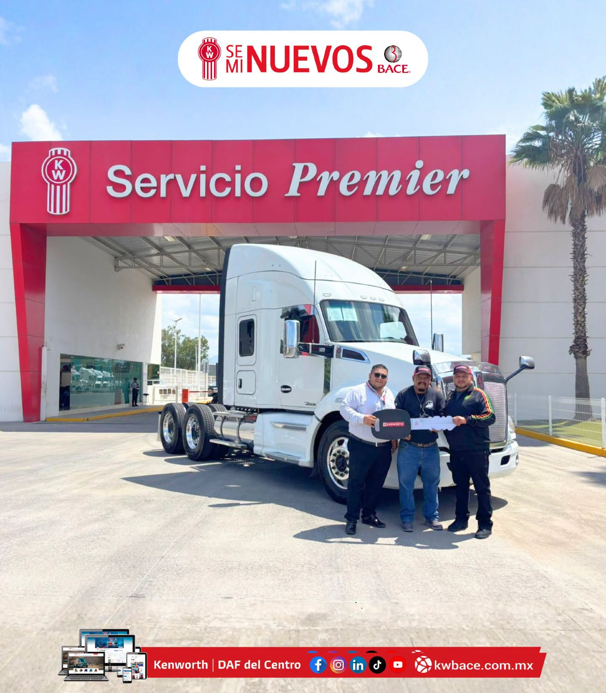
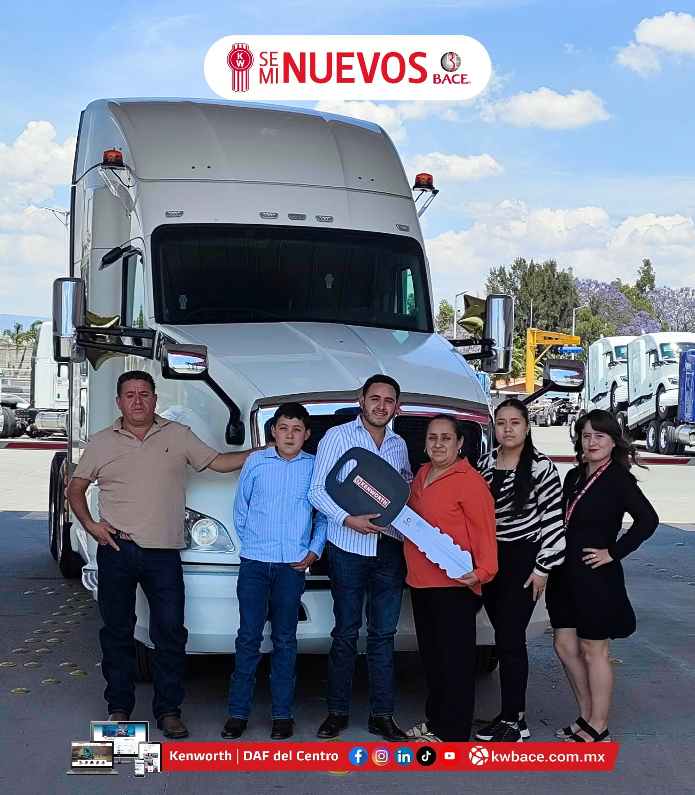
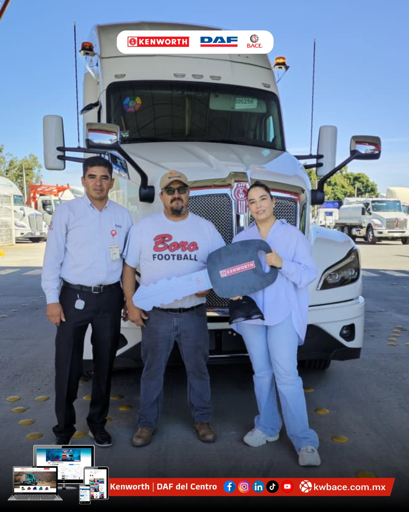

Información que sirve
Configuración, kilometraje y ubicación visibles desde el primer momento.

Información directa, herramientas para comparar y un asesor listo para ayudarte a decidir.
ENTREGAS QUE GENERAN CONFIANZA
Unidades entregadas y nuevos proyectos que comienzan. Conoce algunas de las entregas realizadas por Kenworth DAF BACE.



Tu próxima historia comienza aquí.
Hablar con un asesorDiseñamos una experiencia para que puedas revisar, comparar y avanzar acompañado. BACE Plus representa esa forma más clara de comprar.
Hablar con un especialista →Configuración, kilometraje y ubicación visibles desde el primer momento.
Un especialista entiende tu ruta, carga y operación antes de recomendar.
Sucursales, servicio y refacciones BACE para mantener tu negocio en movimiento.
 COMPRA · VENTA · RENOVACIÓN
COMPRA · VENTA · RENOVACIÓN
Cuéntanos qué unidad tienes y qué buscas después. Revisamos la información y te contactamos para construir una propuesta.
Completa tus datos y un asesor especializado te ayudará a encontrar, comparar o vender una unidad.